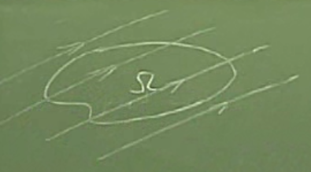
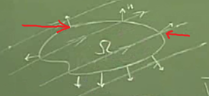

Dersin kullanacağı ana kitap L. C. Evans'ın Kısmi Türevsel Denklemler (partial differential equations -PDE-) kitabı olacak. Bir sonraki ders için okuma ödevi şöyle:
Sf. 1-13'teki özet
Alt bölüm 2.1 sf. 17-19
Bölüm 3 sf. 91-115 arasını tamamen.
PDE'leri incelerken çoğunlukla onların temsil ettiği fiziksel fenomenleri de inceleyeceğiz. Mesela transportasyon (transport) denklemleri, ki
$$ \partial_t u + \vec{b} \cdot \vec{\nabla} u = 0 $$
Üstteki ifadede gradyan operatörü var, bu bilindiği gibi
$$ \vec{\nabla} = \bigg( \frac{\partial }{\partial x_1},.., \frac{\partial }{\partial x_n}, \bigg) $$
$\vec{b}$ içinde sabitler olan bir vektör olabilir
$$ \vec{b} = (b_1,...,b_n) $$
Bu denklem 1. derece PDE'lerin özel bir durumudur bu arada. 1. derece PDE'ler
$$ F(x, u(x), Du(x)) = 0 $$
şeklindedir. $D$ notasyonu Evans'ın gradyan için kullandığı notasyon, alışsak iyi olur. Yani
$$ Du = \nabla u $$
Üstteki gibi denklemlere bakacağız, çözümlerini göreceğiz. Mesela üstteki denklem direk ODE yaklaşımı ile çözülebiliyor. Bu hakikaten ilginç bir şey, yani üstteki gibi geniş bir PDE kategorisi, $n$ tane değişken içerebilen türden denklemler ODE'lere indirgenerek çözülebiliyor. Bu yönteme "karakteristikler metotu (method of characteristics)" ismi veriliyor.
Bu arada
$$ F(x, u(x), Du(x)) = 0 $$
formu oldukça geneldir, çok genel gayrı lineer, normal (ordinary) diferansiyel denklemin formudur. Bir örnek
$$ |\nabla u|^2 = n^2(x) $$
denklemidir, ki bu denklem dalga denkleminde dalgaların uç noktalarını (wavefront) incelerken ortaya çıkar.
Lineer PDE
Lineer PDE'lerin örnekleri mesela işi denklemi (heat equation), ya da yayılma / difüzyon (diffusion) denklemi.
$$ \frac{\partial u}{\partial t} = \nabla u $$
Bir diğer örnek dalga denklemi (wave equation)
$$ \frac{1}{c^2} \frac{\partial ^2}{\partial t^2}u = \nabla u$$
yayılmanın hızı $c$ sabiti olarak gösteriliyor.
Shrodinger denklemi ise şöyle
$$ i \frac{\partial }{\partial t}\psi = -\nabla \psi $$
Isı denklemiyle alakalı önemli bir nokta denge (equilibrium) noktasıdır. Denklem uzun zaman zarfı bağlamında incelendiğinde bir denge noktasına eriştiği görülecektir. Ki bu bizi Laplaca denklemine götürür.
$$ \nabla u = 0 $$
Ya da daha genel olarak
$$ \nabla u = f $$
ise bu denkleme Poisson denklemi adı veriliyor.
Tüm bu denklemler aslında pek çok uygulama alanında ortaya çıkan, çok geniş belli başlı bazı kategorilerin prototipidirler. Mesela İşi denklemine parabolik (paraboliç) kısmı denklem kategorisi deniyor. Dalga denklemi hiperbolik (hyperboliç) kategorisi, Schrödinger ise dağılan (dispursive) PDE kategorisi olarak anılıyor. Laplaca, Poisson denklemlerine elliptik (elliptic) kategorisi ismi veriliyor.
Tüm bu denklemleri incelerken onları temsil ettikleri daha geniş kategorinin örnekleri olarak göreceğiz.
Şimdi PDE'lerin ortaya çıktığı çok basit bir örneği görelim.
Elimizde bir $\Omega$ bölgesi / alanı olduğunu hayal edelim, ki $\Omega \in \mathbb{R}^n$ olsun, yani alttaki resimde çizdiğimiz $\mathbb{R}^2$.
Yine diyelim ki bu $\Omega$ bölgesinin etrafında bir tür sıvıyla kaplı, ve bu sıvı hareket ediyor. Bu hareketi sabit bir hız vektör alanı olarak gösteriyoruz.

$\mathbb{R}^n$'deki bu sabit hız alanını $\vec{V}$ olarak gösterelim. $\vec{V}$'nin vektör işaretini koyduk, ama ileride bunu yapmayabiliriz, ama anlatımın çerçevesinden bir şeyin vektör olup olmadığını anlamak kolay.
Yani bu sıvıyı oluşturan parçacıkler birörnek (üniform) hızda hareket ediyorlar.
Sıvının $x$ noktasındaki $t$ anındaki yoğunluğu $\rho(x,t)$ olarak gösterilsin. O zaman $t$ anında $\Omega$ alanındaki kütleyi hesaplamak istiyorsam, o zaman yoğunluğun hacim üzerinden entegralini alırım.
$$ \textit{Kutle } = \int_\Omega \rho(x,t) \mathrm{d} x $$
Birimleri kontrol edeli, $\rho(x,t)$ kütle / hacim (mesela $kg / cm^3$) birimine sahip, hacim üzerinden entegral alınca elimize kütle geçer.
Bu sıvı belirlenen alan üzerinden sürekli akıyor. O alan içindeki kütlenin değişim oranını merak ediyorum. Şu hesabı yapmam lazım
$$ \frac{d}{dt} \int_\Omega \rho(x,t) \mathrm{d} x $$
Değişim oranı $\Omega$ bölgesinin sınırlarından ne geçiyorsa o'dur.
Bölgenin dış sınırına dik olan birim normal vektörler düşünelim. Eğer bu vektörlerden kırmızı okla gösterilen soldaki normale bakarsak, sıvı akisi ona pek etki etmiyor, yani zarın o bölgesinde çıkış fazla yok. Fakat sağda işaretli normal üzerinden oldukça fazla akış var.

Bu durumu da
$$ \frac{d}{dt} \int_\Omega \rho(x,t) \mathrm{d} x = - \int_{\partial \Omega} \rho(x,t) \vec{v} \cdot \vec{n} \mathrm{d} S $$
şeklinde gösterebiliriz (eşitliğin sağ tarafını şimdi ekledik). $\partial \Omega$ bölgenin "sınırı" anlamında kullanıldı, eğer 2 boyutlu düzlemde isek $\partial \Omega$ sınırı bir eğridir, eğer 3 boyutta isek sınır 2 boyutlu bir yüzey (surface), vs (genel kural olarak $n-1$ boyutlu bir yüzeydir).
$\vec{n}$ resimde çizilen birim normaller.
Bu denklemin tek söylediği içeri giren ile çıkanın birbirine (eksi işaret sonrasında) birbirine eşit olduğu. İki tarafın kütle / zaman birimine sahip olduğunu kontrol edebiliriz.
Şimdi İleri Calculus'tan hatırlayabileceğiniz bir kural
Gauss'un Teorisi
$F: \mathbb{R}^n \to \mathbb{R}^n$ üzerinde tanımlı herhangi bir vektör alanı için, $x \mapsto F(x)$ olmak üzere, $\mapsto$ işareti eşlenme (maps to) anlamına geliyor, $\Omega \subset \mathbb{R}^n$ bölgesi var ise, ve bu vektör alanı pürüzsüz (smooth) bir vektör alani ise (bu vektör bileşenlerinin türevi alınabilir fonksiyonlar olduğunu söyler), o zaman şu da doğrudur. Vektör alanının sapmasını (divergence) entegre ediyorum,
$$ \int_\Omega \nabla \cdot F \mathrm{d} x = \int_{\partial \Omega} F \cdot n \mathrm{d} S $$
$\nabla \cdot$ operatörü $div$ anlamında kullanıldı, ve $\Omega$ bir alan.
Gauss'un Teorisi, Calculus'un Temel Teorisinin çok boyutlu bir karşılığı olarak düşünülebilir aslında.
Gauss'un Teorisini bizim formülasyona uygulayalım
$$ \int_{\partial \Omega} \rho \vec{v} \cdot \vec{n} \mathrm{d} S = \int_\Omega \nabla \cdot (\rho \vec{v}) \mathrm{d} x $$
Şimdi şunu yazabilirim
$$ \frac{d}{dt} \int_\Omega \rho \mathrm{d} x = \int_\Omega \nabla \cdot (\rho \vec{v}) \mathrm{d} x $$
Eşitliğin solundaki türevi alıp, sağ tarafı sola taşıyalım
$$ \int_\Omega \bigg( \partial_t \rho + \nabla \cdot (\rho \vec{v}) \bigg)dx = 0 $$
$\Omega$ işareti $\mathbb{R}^n$ içinde herhangi bir hacim ise (iki boyutta bir alan, 3 boyutta hacim), bu hacimi sonsuz küçülttüğümüzde artık şu ifadenin
$$ \partial_t \rho + \nabla \cdot (\rho \vec{v}) = 0 $$
noktasal (pointwise) olarak her $x,t$ için doğru olduğunu görebiliriz, eğer $\rho$ yeterinç pürüzsüz bir fonksiyon ise tabii ki.
Üstteki fonksiyon suna da eşittir
$$ \partial_t \rho + \vec{v} \cdot \nabla \rho = 0$$
Bu denklem $F(x,\rho,\nabla \rho)=0$ formundaki bir denklemdir, genel olarak bu formla ilgileniriz, bir üstteki örnek ise bu formun en basit örneklerinden biri, transportasyon fenomeni (transport phenomena) denklemi.
Şimdi transport denklemini çözelim, önce direk olarak, sonra biraz dolaylı gibi gözükebilecek bir şekilde ama sonra göreceğiz ki bu dolaylı yöntem aslında çözüm için çok uygun.
Tek boyutta formül şu formda
$$ \partial_t \rho + v \partial_x \rho = 0 $$
Daha genel olarak diyelim ki
$$ \partial_t u + c\partial_x u = 0, \ \ c>0 $$
var diyelim, başlangıç şartı
$$ u(x,0) = F(x) $$
Böyle problemlere çoğunlukla Başlangıç Şart Problemleri (İnitial Value Problem) ismi verilir.
Diyelim başlangıç şartı $F \in C'$ şöyle bir fonksiyon
Çözüm nedir? Sudur
$$ u(x,t) = F(x-ct) $$